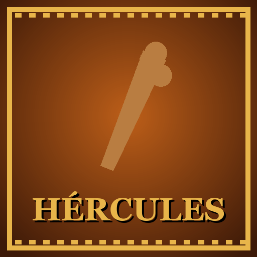
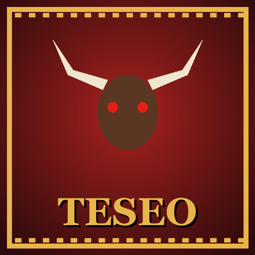
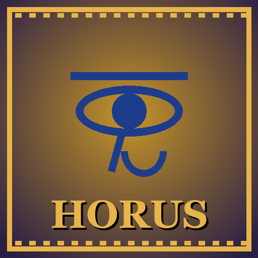
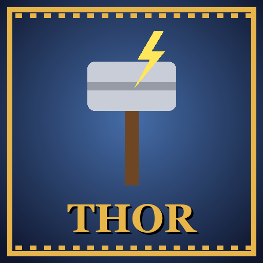
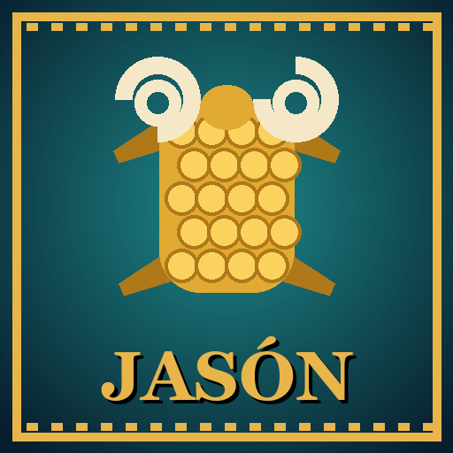
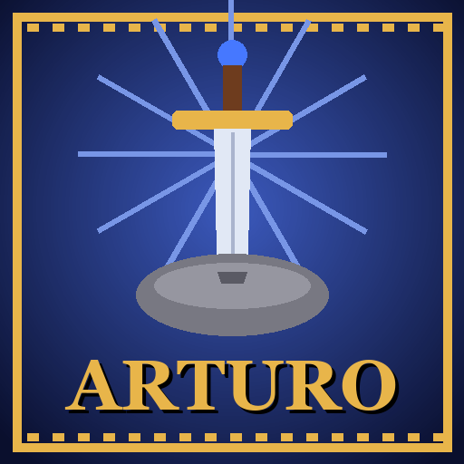

Una colección de juegos de aventuras en 3D sobre mitos y leyendas.
Cada uno es un juego distinto: elige el que quieras.

HérculesLos trabajos del héroe más fuerte: el León de Nemea, la Hidra, el Jabalí, los establos de Augías y Cerbero.
Teseo y el MinotauroCreta, el laberinto con el hilo de Ariadna y el Minotauro. Perseo y MedusaEl ojo de las Grayas, Medusa (¡no la mires!) y el Kraken.
Horus y el dios SetLos pedazos de Osiris, la pirámide de las trampas y el duelo contra Set (¡que se convierte en hipopótamo!).
ThorThor vestido de novia, los gigantes de hielo y el Ragnarök.
Jasón y los ArgonautasLas Harpías, el Argo entre las Rocas Chocantes, guerreros esqueleto y el dragón del Vellocino de Oro.
El Rey ArturoLa espada en la piedra, el Caballero Negro, Excalibur y un dragón que vuela sobre Camelot. Sun Wukong, el Rey MonoUn bastón mágico que se estira, clones de mono, los melocotones del Cielo y el Rey Demonio Toro.En todos los juegos
- La Arena · oleadas infinitas con los monstruos de cada leyenda y un jefe cada 5. ¿Cuál es tu récord?
- Multijugador online · pulsa «Online» en un capítulo y te sale un código de 4 letras; tu amigo lo escribe en «MULTIJUGADOR → Unirse».
- 2 jugadores en el mismo ordenador · activa «2 jugadores (mando)».
- En iPhone · abre el juego en Safari → Compartir → «Añadir a pantalla de inicio». Cada juego tiene su propio icono.
Controles
| Ordenador | WASD moverse · ratón cámara · clic izquierdo atacar · clic derecho arco/martillo/escudo (mantén para apuntar) · Shift voltereta · E usar / agarrar · Esc pausa |
| Móvil / tablet | Joystick a la izquierda · arrastra a la derecha para la cámara · botones en pantalla. Mejor en horizontal. |
| Mando | Stick izquierdo moverse · stick derecho cámara · X atacar · R1 arco · B voltereta · A usar |
Cada juego guarda su propia partida en tu navegador. No se recoge ningún dato personal.